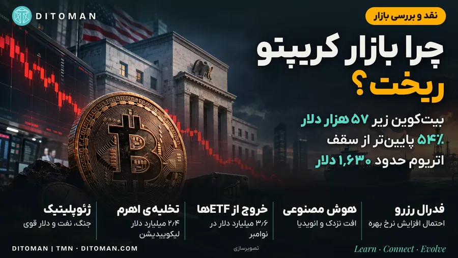
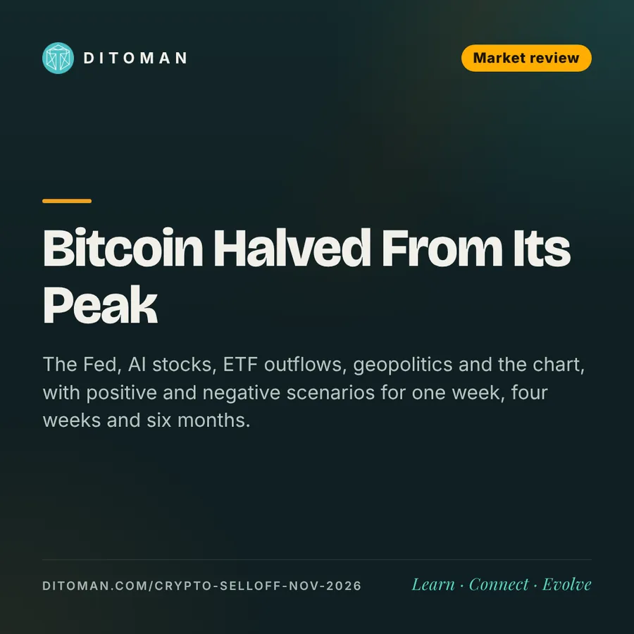

بیتکوین نصف شد؛ چرا بازار کریپتو ریخت و چه در پیش است؟
Bitcoin halved from its peak: why crypto fell and what comes next
فدرال رزرو، سهام هوش مصنوعی، خروج از ETFها، ژئوپلیتیک و نمودار؛ با سناریوهای مثبت و منفی برای یک هفته، چهار هفته و شش ماه آینده.
The Fed, AI stocks, ETF outflows, geopolitics and the chart, with positive and negative scenarios for one week, four weeks and six months.
0. در یک نگاه
بیتکوین جمعه ۲۹ آبان ۱۴۰۵ (۲۰ نوامبر ۲۰۲۶) به زیر ۵۷ هزار دلار رسید؛ پایینترین سطح از سپتامبر ۲۰۲۴ و حدود ۵۴ درصد پایینتر از سقف ۱۲۶ هزار دلاری اکتبر ۲۰۲۵ (CoinDesk).
| شاخص | عدد |
|---|---|
| کف بیتکوین در ۲۰ نوامبر | زیر ۵۷ هزار دلار |
| اتریوم | حدود ۱٬۶۳۰ تا ۱٬۶۵۰ دلار |
| فاصله از سقف تاریخی | حدود ۵۴ درصد |
| لیکوییدیشن ۲۴ ساعته | ۲٫۴ میلیارد دلار |
| خروج از ETFهای بیتکوین در نوامبر | حدود ۳٫۶ میلیارد دلار |
| شاخص ترس و طمع | ۹ (ترس شدید) |
| افت نزدک در ۲۰ نوامبر | حدود ۵ درصد |
| RSI روزانهی بیتکوین | حدود ۱۶ |
ایدهی اصلی در یک جمله: این ریزش از جنس «پول گران» است، نه خرابی شبکه؛ سهام فناوری، طلا و کریپتو با هم افتادند.
قیمتها مربوط به زمان انتشار منابعاند و لحظهای نیستند. این گزارش تحلیل و آموزش است، نه توصیهی خرید یا فروش.
1. چه اتفاقی افتاد؟
- بیتکوین: کف تابستان (۵۷٬۷۰۰ دلار) شکست و قیمت به پایینترین سطح دو سال اخیر رسید. رشد تابستان تا ۸۷ هزار دلار کاملاً پس داده شد
- اتریوم و آلتکوینها: اتریوم حدود ۷ درصد و سولانا، XRP و BNB هر کدام ۵ تا ۹ درصد در یک روز افتادند
- سهام: نزدک حدود ۵ درصد و S&P 500 حدود ۳٫۷ درصد افت کرد؛ نزدک به پایینترین سطح از آوریل رسید
- طلا و نقره: طلا به حدود ۳٬۵۰۰ دلار رسید؛ پایینترین سطح از سپتامبر ۲۰۲۵
وقتی همهچیز با هم میریزد، دلیل معمولاً بیرون از کریپتو است.
2. فدرال رزرو؛ دلیل اصلی
- تورم: تورم هستهی آمریکا در اکتبر ۰٫۳ درصد ماهانه بود؛ سومین ماه پیاپی و بالاتر از پیشبینی (INDmoney)
- نرخ بهره: نرخ فعلی ۳٫۷۵ تا ۴ درصد است. بازار برای نشست ۸ و ۹ دسامبر (۱۷ و ۱۸ آذر) افزایش نرخ را قیمتگذاری کرده است
- لحن مقامها: کریستوفر والر، عضو فدرال رزرو، گفته اگر تورم هسته همینطور بماند باید افزایش بزرگتر (۰٫۵ واحد) هم بررسی شود
- چرا مهم است؟ اوراق دوسالهی آمریکا حدود ۴٫۷ درصد سود میدهد. وقتی پول نقد چنین سودی دارد، نگه داشتن دارایی بدون سود مثل بیتکوین و طلا هزینهی فرصت بیشتری دارد
- یک نکتهی دقیق: بازده اوراق دهساله در همان هفته حدود ۱۷ واحد پایه کم شد؛ یعنی بخشی از پول به اوراق بلندمدت پناه برد. پس «همهی داراییهای امن فروخته شدند» دقیق نیست
3. لرزش سهام هوش مصنوعی
- انویدیا: درآمد فصلی ۱۱۵٫۸ میلیارد دلار، ۱۰۳ درصد بیشتر از پارسال و بالاتر از انتظار بود (Finviz). با این حال سهم در ۲۰ نوامبر نزدیک ۱۴ درصد افتاد
- Anthropic: بزرگترین عرضهی اولیهی تاریخ با ۸۱٫۳ میلیارد دلار؛ قیمت عرضه ۸۳ دلار، بازگشایی ۱۱۱٫۵ و پایان روز اول ۹۷٫۱۷ دلار. روز دوم حدود ۹ درصد دیگر افت کرد
- مسیر انتقال: سرمایهگذاری که هم سهام فناوری دارد و هم کریپتو، هنگام کم کردن ریسک هر دو را میفروشد. همزمانی بهتنهایی علیت را ثابت نمیکند، اما این مسیر قابل توضیح است
4. خروج پول از ETFها و دومینوی اهرم
| روز | خالص جریان ETFهای بیتکوین |
|---|---|
| دوشنبه ۱۶ نوامبر | ۷٫۹+ میلیون دلار |
| پنجشنبه ۱۹ نوامبر | ۵۸۲٫۳− میلیون دلار (IBIT بهتنهایی ۵۴۱٫۱−) |
| جمعه ۲۰ نوامبر | ۱۲۴٫۵− میلیون دلار |
| کل هفته | ۱٫۲۵− میلیارد دلار |
| نوامبر تا امروز | حدود ۳٫۵۹− میلیارد دلار |
منبع: Farside به نقل از crypto.news
- اهرم: افت اولیه ارزش وثیقهها را کم کرد و موقعیتهای خرید اهرمی خودکار بسته شدند. Coinglass حدود ۲٫۴ میلیارد دلار لیکوییدیشن در ۲۴ ساعت ثبت کرد؛ بیش از ۱ میلیارد آن بیتکوین بود
- ترس: شاخص ترس و طمع به ۹ رسید؛ یک هفته قبل ۱۸ و یک ماه قبل ۵۱ بود (Decrypt)
- نکته: خروج از ETF همیشه به معنی فروش نهایی نیست؛ بخشی میتواند جابهجایی بین ابزارها باشد. برای تشخیص برگشت، سه تا پنج روز ورود پیوسته مهمتر از یک روز مثبت است
5. طلا، دلار و شوک نقدینگی
- دلار به بالاترین سطح ۱۹ ماه اخیر رسید و شاخص VIX به حدود ۳۰ رفت
- فروش همزمان طلا، سهام و کریپتو نشانهی نیاز به پول نقد است. تحلیلگران Delphi Digital آن را «مشکل نقدینگی» نامیدهاند، نه مشکل خاص کریپتو (CoinDesk)
6. سیاست و ژئوپلیتیک
- جنگ ایران: جنگ نزدیک به نُه ماه است ادامه دارد و مذاکرات غیرمستقیم هنوز به آتشبس نرسیده است. CBS News در ۲۰ نوامبر به نقل از منابعش از بررسی حملهای تازه خبر داد (CBS News)
- نفت: برنت حدود ۹۱ دلار است و در هفته حدود ۵ درصد افت کرده، چون بخشی از صادرات خلیج فارس به آسیا برگشته است (OilPrice)
- آمریکا: پس از انتخابات میاندورهای، ترکیب کنگره از ژانویه تغییر میکند و قانون ساختار بازار کریپتو (CLARITY) متوقف مانده است
- مرز شواهد: سهم دقیق هر یک از این عوامل را نمیتوان جدا از افت سهام و سیاست پولی اندازه گرفت. مسیر اثرشان از راه قیمت نفت، تورم انتظاری و تقاضا برای دلار است
7. آیا شرکتها در حال انباشتاند؟
- Strategy: در هفتهی ۹ تا ۱۵ نوامبر ۴۸۵ بیتکوین به ارزش ۳۳٫۴ میلیون دلار خرید. موجودیاش ۸۵۰٬۸۴۹ بیتکوین با میانگین خرید ۷۵٬۴۵۲ دلار است؛ یعنی فعلاً در زیان (The Block)
- Morgan Stanley: صندوق بیتکوین این بانک (MSBT) در همین هفته ۵۳٫۳ میلیون دلار ورودی مثبت داشت
- دیگران: Metaplanet حدود ۴۴ هزار، Twenty One حدود ۴۳٬۵۰۰ و Strive حدود ۴۳ هزار بیتکوین دارند، اما بیشترشان سرعت خرید را کم کردهاند
باید میان «خرید اعلامشده» و «فرضیهی انباشت پنهانی» فرق گذاشت. از خرید یک یا دو شرکت نمیتوان نتیجه گرفت که همهی نهادها آمادهی جهشاند.
8. نمودار چه میگوید؟
| سطح | عدد (دلار) | معنا |
|---|---|---|
| مقاومت سوم | ۶۸ تا ۷۰ هزار | میانگین ۲۰ روزه حدود ۷۰ هزار |
| مقاومت دوم | ۶۵ هزار | |
| مقاومت اول | ۶۰ تا ۶۲ هزار | حمایت شکستهشده |
| قیمت حدودی | ۵۷ تا ۵۸ هزار | |
| حمایت اول | ۵۵ تا ۵۶ هزار | کف اخیر |
| حمایت دوم | ۴۹ تا ۵۲ هزار | سطح روانی ۵۰ هزار |
- میانگینها: قیمت زیر میانگین ۲۰۰ روزه (حدود ۷۲٬۵۰۰ دلار) و میانگین ۲۰۰ هفته است (Blockchain.News)
- RSI: حدود ۱۶؛ بسیار پایینتر از مرز ۳۰. اشباع فروش یعنی فروشندهها خستهاند، نه اینکه روند برگشته است
- تقاطع میانگینها: میانگین ۲۱ روزه در ۱۹ نوامبر زیر میانگین ۲۰۰ روزه رفت. آخرین بار در ۲۰۲۳ پس از چنین وضعی بازار کف ساخت، اما به گفتهی خود تحلیلگر «یک نمونه برای الگو کافی نیست» (Cointelegraph)
- مشتقات: به گفتهی CryptoQuant، با افت قیمت موقعیتهای باز بیشتر شده؛ یعنی معاملهگران فروش تازه باز میکنند (Forbes)
9. سناریوهای بیتکوین
| بازه | سناریوی مثبت | سناریوی میانی | سناریوی منفی |
|---|---|---|---|
| یک هفته | ۶۰ تا ۶۵ هزار دلار | ۵۵ تا ۶۰ هزار دلار | ۴۹ تا ۵۵ هزار دلار |
| چهار هفته | ۶۵ تا ۷۵ هزار دلار | ۵۲ تا ۶۵ هزار دلار | ۴۲ تا ۵۲ هزار دلار |
| شش ماه | ۷۵ تا ۹۵ هزار دلار | ۵۵ تا ۷۵ هزار دلار | ۴۰ تا ۵۰ هزار دلار |
- یک هفته: چهارشنبه شاخص تورم PCE میآید و پنجشنبه تعطیلی شکرگزاری آمریکاست؛ حجم کم، نوسان بیشتر. سناریوی مثبت به کم شدن خروج از ETFها و آرام شدن سهام نیاز دارد
- چهار هفته: همهچیز به نشست فدرال رزرو در ۱۷ و ۱۸ آذر بستگی دارد. افزایش ۰٫۲۵ واحدی با لحن ملایم به نفع سناریوی مثبت است؛ افزایش ۰٫۵ واحدی یا تشدید جنگ به نفع سناریوی منفی
- شش ماه: سناریوی مثبت یعنی مهار تورم، توقف افزایش نرخ و برگشت پول به ETFها؛ در آن صورت پس گرفتن میانگین ۲۰۰ روزه و حرکت به سمت سقف تابستان (۸۷ هزار) ممکن میشود. سناریوی منفی یعنی نرخ بهرهی بالا همراه با کند شدن اقتصاد
- یادآوری تاریخی: در چرخههای قبلی، بیتکوین از سقف تا کف ۷۵ تا ۸۵ درصد افت کرده بود. این چرخه تا امروز حدود ۵۴ درصد افت داشته است. گذشته تضمین آینده نیست، اما نشان میدهد بازهها قطعی نیستند
این بازهها سناریوی شرطیاند، نه پیشبینی قطعی و نه مدل احتمالاتی. قیمت میتواند از هر دو طرف آنها عبور کند.
10. پنج علامت برای پایش روزانه
- یک: خالص جریان ETFهای بیتکوین و اتریوم در چند روز پیاپی
- دو: جهت نزدک و سهام نیمههادی
- سه: بازده واقعی اوراق آمریکا و قدرت دلار
- چهار: موقعیتهای باز، نرخ تأمین مالی و حجم لیکوییدیشن
- پنج: حفظ یا شکست کف اخیر و حجم معاملات در برگشتها
11. تقویم پیش رو
| تاریخ | رویداد |
|---|---|
| ۴ آذر (۲۵ نوامبر) | شاخص تورم PCE آمریکا برای اکتبر |
| ۵ آذر (۲۶ نوامبر) | تعطیلی شکرگزاری؛ نقدینگی کم |
| ۱۷ و ۱۸ آذر (۸ و ۹ دسامبر) | نشست و تصمیم نرخ بهرهی فدرال رزرو |
| ۱۹ آذر (۱۰ دسامبر) | تورم مصرفکنندهی نوامبر آمریکا |
12. نگاه دیتومان
افت سریع بازار به معنی پایان فناوری بلاکچین نیست؛ همانطور که خرید چند شرکت به معنی آغاز قطعی بازار صعودی نیست. بیتکوین همان است که بود؛ قیمت پول عوض شده است.
فرق «جهش فنی» با «برگشت روند» را سه چیز مشخص میکند: ورود پایدار پول، ساختار قیمت و آرام شدن بازارهای جهانی. ترس شدید همیشگی نیست، اما زمان برگشت را هیچکس نمیداند.
خرید پلهای هم خطر زیان را حذف نمیکند. هر تصمیم مالی باید با توجه به شرایط شخصی و با مسئولیت خود فرد گرفته شود.
بیشتر بخوانید
- انویدیای بعدی کدام است؟
- چه چیزی قیمت نقره را تعیین میکند؟
- کتابخانهی دیتومان
- قیمت لحظهای تتر، بیتکوین و طلا
منابع
- CoinDesk: Bitcoin tanks below $57,000 for the first time in two years (21 Nov 2026)
- CoinDesk: cash is king amid Fed fears (20 Nov 2026)
- Forbes: Bitcoin plunges below $60,000 as risk-off trading fuels losses (20 Nov 2026)
- crypto.news: Bitcoin and Ether ETFs shed $1.47B in weekly outflows (Farside data)
- Decrypt: Crypto Fear & Greed Index hits worst level since February
- Blockchain.News: BTC technical levels (21 Nov 2026)
- Cointelegraph: rare bearish trend-line crossover
- The Block: Strategy buys another 485 BTC (16 Nov 2026)
- INDmoney: US inflation and Fed pricing for December 2026
- Finviz: Nvidia revenue doubles to $115.84 billion
- CBS News: U.S. and Israel considering new assault on Iran, sources say (20 Nov 2026)
- OilPrice: Tankers are being hit daily. So why is oil falling?
آخرین بازبینی: ۳۰ آبان ۱۴۰۵. قیمتها مربوط به زمان انتشار منابعاند. سناریوها شرطیاند، نه پیشبینی قطعی. این گزارش آموزشی و تحلیلی است و توصیهی خرید یا فروش نیست.